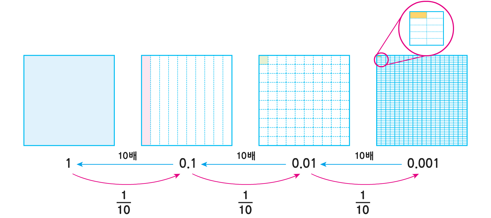

1
1, 0.1, 0.01, 0.001 사이의 관계를 알아봅시다.
1, 0.1, 0.01, 0.001 사이의 관계를 이야기해 보세요.

한 걸음 더
한 걸음 더
소수를 10배 하면 소수점을 기준으로 소수가 어떻게 변하나요?
소수점을 기준으로 수가 왼쪽으로 한 자리 이동합니다.
소수의
1
/
10
을
구하면 소수점을 기준으로 소수가 어떻게 변하나요?
소수점을 기준으로 수가 오른쪽으로 한 자리 이동합니다.
1, 0.1, 0.01, 0.001 사이에는 어떤 관계가 있다고 생각하나요?
1에서 0.001로 갈수록 수가
1
/
10
로 작아집니다.
0.001에서 1로
갈수록 수가 10배로 커집니다.